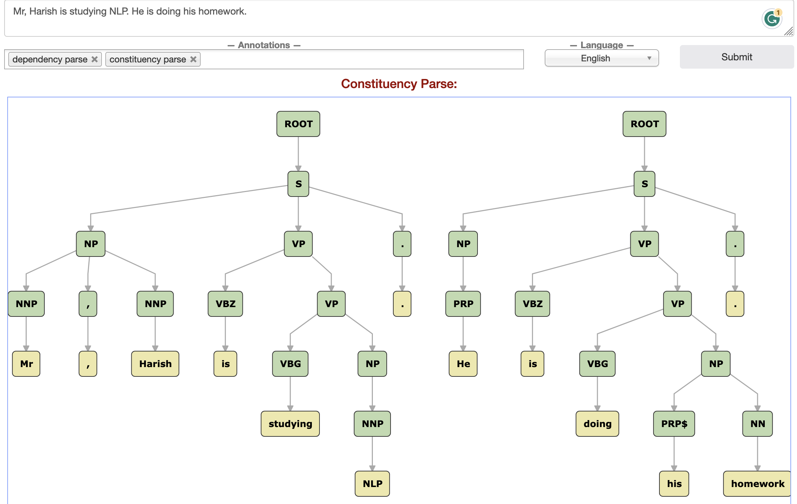
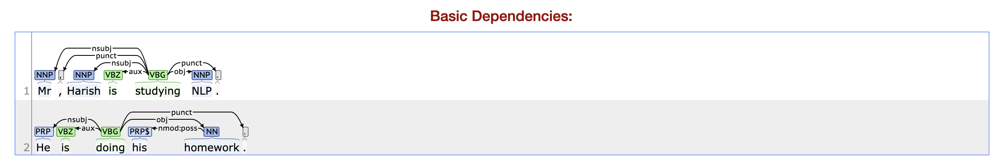

What is NLP?
NLP stands for Natural Language Processing, which is a subfield of artificial intelligence (AI) that focuses on the interaction between computers and human language. NLP encompasses the development of algorithms, models, and techniques that enable computers to understand, interpret, and generate human language in a valuable way. Here are some key aspects of NLP: NLP is Classified in two sub-categories
NLU(Natural Language Understanding) - NLU is about teaching machines to understand what humans are saying. It includes task like Semantic Parsing, Relation Extraction, Natural Language Inference, Word Sense Disambiguation.NLG(Natural Language Generation) - NLG is about teaching machines to generate human-like text or speech. It includes tasks like language translation, text generation, and text summarization, where the machine generates text that sounds natural to humans.
Variety of Task under NLP:
1. Part-of-speech tagging: identify if each word is a noun, verb, adjective, etc.)
2. Named entity recognition NER): identify person names, organizations, locations, medical codes, time expressions, quantities, monetary values, etc)
3. Question answering
4. Speech recognition
5. Text-to-speech and Speech-to-text
6. Topic modeling
7. Sentiment classification
9. Language modeling
10. Translation
11. Intent Recognition
12. Semantic Parsing
13. Co-reference Resolution and Dependency Parsing
14. Summarization
15. Chatbots etc.
16. Text Classification
17. Topic Modeling
18. Image Captioning
19. Optical Character Recognition
20. Visual Question Answering
Data Collection
Sources
For Generative Training :- Where the model has to learn about the data and its distribution
1. News Article:- Archives
2. Wikipedia Article
3. Book Corpus
4. Crawling the Internet for webpages.
5. Social Media - Reddit, Stackoverflow, twitter
6. Handcrafted Datasets.Generative training on an abundant set of unsupervised data helps in performing Transfer learning for a downstream task where few parameters need to be learnt from sratch and less data is also required.
For Determinstic Training :- Where the model learns about Decision boundary within the data.
Generic
1. Kaggle Dataset
Sentiment
1. Product Reviews :- Amazon, Flipkart
Emotion:-
1. ISEAR
2. Twitter dataset
Question Answering:-
1. SQUAD
Different task has different Handcrafted data.For Vernacular text
In vernacular context we have crisis in data especially when it comes to state specific language in India. (Ex. Bengali, Gujurati etc.) Few Sources are:- 1. News (Jagran.com, Danik bhaskar) 2. Moview reviews (Web Duniya) 3. Hindi Wikipedia 4. Book Corpus 6. IIT Bombay (English-Hindi Parallel Corpus)
Tools
- Scrapy :- Simple, Extensible framework for scraping and crawling websites. Has numerous feature into it.
- Beautiful-Soup :- For Parsing Html and xml documents.
- Excel
- wikiextractor:- A tool for extracting plain text from Wikipedia dumps
Data Annotation Tool
- TagTog
- Prodigy (Explosion AI)
- Mechanical Turk
- PyBossa
- Chakki-works Doccano
- WebAnno
- Brat
- Label Studio
Some Common Packages
- Flair
- Allen NLP
- Deep Pavlov
- Pytext
- NLTK
- Transformer
- Spacy
- torchtext
- Ekphrasis
- Genism
- Stanza
- Spark-NLP
Any NLP task has to have few important components. 1. Data Pre-processing (Basically Junk removal from text) 2. Tokenization 3. Feature Selection 4. Token Vectorization 4. Model Building 5. Training and Inference.
Data preprocessing
Data preprocessing is a crucial step in natural language processing (NLP) that involves cleaning and transforming raw text data into a format that can be effectively used for NLP tasks. Here is a list of common NLP data preprocessing techniques:
Tokenization: Splitting the text into individual words or tokens. Tokenization is the foundation for many NLP tasks.
Lowercasing: Converting all text to lowercase to ensure uniformity and simplify analysis by treating words in a case-insensitive manner.
Stop Word Removal: Removing common words (e.g., “and,” “the,” “in”) that don’t carry much meaning and are often filtered out to reduce noise.
Punctuation Removal: Stripping punctuation marks from text to focus on the actual words.
Special Character Removal: Removing special characters or symbols that may not be relevant to the analysis.
Whitespace Trimming: Removing extra spaces or leading/trailing spaces.
HTML Tag Removal: When dealing with web data, removing HTML tags that may be present in the text.
Stemming: Reducing words to their root or base form. For example, “running” and “ran” would both be stemmed to “run.”
Lemmatization: Similar to stemming but reduces words to their dictionary or lemma form, which often results in a more linguistically accurate word.
Spell Checking: Correcting spelling errors in the text to improve the quality of the data.
Text Normalization: Ensuring consistent representations for words, like converting abbreviations to their full form (e.g., “don’t” to “do not”).
Handling Contractions: Expanding contractions (e.g., “can’t” to “cannot”) for better analysis.
Handling Acronyms: Expanding acronyms (e.g., “NLP” to “natural language processing”) for clarity.
Noise Removal: Eliminating irrelevant or noisy data, such as non-textual content or metadata.
Token Filtering: Filtering tokens based on specific criteria (e.g., length, frequency) to remove outliers or less meaningful words.
Text Chunking: Dividing text into smaller chunks or sentences for analysis.
Handling Missing Data: Dealing with missing values or incomplete text data.
Removing Duplicates: Identifying and removing duplicate or near-duplicate text entries.
Tokenization
Tokenization is the process of breaking down a text or a sequence of characters into smaller units, typically words or subwords, which are called tokens.
The primary purpose of tokenization is to split text into units that can be processed more easily. These units are the basic building blocks for various NLP tasks. Here are some key points about tokenization:
Token: A token is a single unit or word that results from the tokenization process. For example, the sentence “I love NLP” can be tokenized into three tokens: “I,” “love,” and “NLP.”
Word Tokenization: Word tokenization involves splitting text into words. In many cases, words are separated by whitespace or punctuation. Word tokenization is a common approach for many NLP tasks.
Subword Tokenization: Subword tokenization splits text into smaller units, which are often subword parts or characters. This approach is used in models like BERT, which can capture the meaning of subwords and handle out-of-vocabulary words effectively.
Sentence Tokenization: Sentence tokenization divides text into individual sentences. It is used to process and analyze text at the sentence level.
Feature Selection
From Tokens features are created 1. N-grams: Extracting multi-word phrases (n-grams) to capture more context (e.g., “natural language processing” as a bigram).
Entity Recognition: Identifying and labeling entities (e.g., names of people, organizations, locations) in the text.
Part-of-Speech Tagging: Assigning parts of speech (e.g., noun, verb, adjective) to words in the text.
Encoding/Decoding: Converting text into numerical representations, such as one-hot encoding or word embeddings, and vice versa.
Text Vectorization
Bag of Words
TF-IDF
Representation of Text for Sequence Task
Every text in a sentence is represented using one hector vector based on its position in the vocabulary
Word Embeddings
BOW and TF-IDF are spare representation of Tokens. In contrast Embedding refer to dense vector representations of Tokens in a continuous vector space. These embeddings are used to represent words or other linguistic units in a way that captures semantic relationships and contextual information.
Embeddings are a fundamental component of many NLP applications, enabling models to understand and work with textual data in a way that captures semantic information and relationships between words. They have revolutionized the field of NLP and have significantly improved the performance of various NLP tasks.
1. Word2Vec
2. Glove
3. FastText
4. ELMOModels
- RNN
- LSTM
- BI-LSTM
- GRU
- CNNs
Architectures
Seq-Seq
Seq-Seq Attention
Pointer Generator Network
Transformer
GPT
Transformer-XL
BERT
GPT-2
Important topics that have shaped NLP
Grounding
Grounding refers to the process of connecting or mapping natural language expressions to their corresponding real-world entities or concepts. It is a fundamental aspect of NLU systems, which aim to bridge the gap between human language and the world’s knowledge and objects. Grounding allows NLU systems to understand and interpret language in a way that aligns with the physical and conceptual world.
There are several forms of grounding in NLU:
Referential Grounding: This involves linking words or phrases in natural language to specific entities in the real world. For example, in the sentence “The Eiffel Tower is a famous landmark,” referential grounding would involve identifying “the Eiffel Tower” as a reference to the actual structure in Paris.
Spatial Grounding: This is about understanding the spatial relationships and locations described in language. For instance, when someone says, “The cat is on the table,” spatial grounding would involve identifying the cat’s location relative to the table.
Temporal Grounding: This involves relating language to time. For example, understanding phrases like “tomorrow,” “last week,” or “in the future” and connecting them to specific points in time.
Ontological Grounding: This is about mapping language to a structured knowledge representation or ontology. For instance, understanding that “apple” can refer to both the fruit and the technology company and distinguishing between them based on the context.
Semantic Grounding: This relates to understanding the meaning of words and phrases in a semantic context. It involves recognizing word sense disambiguation, word sense induction, and other techniques for interpreting the meaning of words within the given context.
NLI (Natural Language Inference)
Natural Language Inference, which is a fundamental task in natural language understanding (NLU). It involves determining the relationship between two given sentences: a “premise” and a “hypothesis.” The goal is to determine whether the hypothesis is entailed, contradicted, or neutral with respect to the information presented in the premise. NLI is crucial for various NLU applications, including question answering, text summarization, sentiment analysis, and more.
Two widely recognized datasets for NLI are SNLI (Stanford Natural Language Inference) and MultiNLI. These datasets are used for training and evaluating NLI models:
- SNLI (Stanford Natural Language Inference):
- SNLI is one of the pioneering datasets for NLI. It contains a collection of sentence pairs labeled with one of three categories: “entailment,” “contradiction,” or “neutral.”
- The dataset consists of sentences that are manually generated and crowd-sourced annotations to provide labels.
- MultiNLI (The Multi-Genre Natural Language Inference Corpus):
- MultiNLI is an extension of SNLI and is designed to be more challenging. It contains sentence pairs from various genres, which helps NLI models generalize better across different text types and styles.
- It offers a more diverse set of language samples, making it a valuable resource for NLI research.
Examples of NLI tasks include:
- Given the premise “The cat is sitting on the windowsill” and the hypothesis “A feline is resting near the window,” the NLI model should determine that the hypothesis entails the premise (entailment).
- For the premise “The dog is chasing the mailman,” and the hypothesis “The mailman is chasing the dog,” the model should recognize that the hypothesis contradicts the premise (contradiction).
- If the premise is “The sun is shining brightly,” and the hypothesis is “The weather is beautiful,” the NLI model should indicate that the hypothesis is neutral with respect to the premise (neutral).
NLI is an essential benchmark for evaluating the performance of NLU models, as it assesses their ability to comprehend and reason about the relationships between sentences, which is crucial for various natural language understanding tasks.
Coreference resolution
Coreference resolution is a natural language processing (NLP) task that involves determining when two or more expressions (words or phrases) in a text refer to the same entity or concept. The primary goal of co-reference resolution is to identify which words or phrases in a text are related to one another in terms of their reference to a common entity, such as a person, place, or thing. This task is crucial for understanding the structure and meaning of text, as it helps in creating coherent and cohesive interpretations of documents.
Here’s a breakdown of coreference resolution and its importance:
- Definition of Coreference Resolution:
- Co-reference resolution involves identifying co-referent expressions. For example, in the sentence “John said he was tired,” the pronoun “he” co-refers to “John.”
- It can be applied to different types of expressions, including pronouns (he, she, it), definite noun phrases (the cat, this book), and indefinite noun phrases (a dog, some people).
- Different Datasets:
- There are several datasets used for training and evaluating coreference resolution models. Some popular datasets include:
- OntoNotes: A widely used dataset that provides text documents with annotations for coreference resolution.
- CoNLL-2012: Part of the CoNLL Shared Task series, this dataset contains news articles with annotated coreferences.
- ACE: The Automatic Content Extraction (ACE) program includes a dataset for entity coreference, which is widely used for evaluation.
- Web Anaphora Corpus: This dataset includes web documents and their coreference annotations.
- There are several datasets used for training and evaluating coreference resolution models. Some popular datasets include:
- Importance of Coreference Resolution:
- Text Coherence: Coreference resolution helps in maintaining text coherence by ensuring that different mentions of the same entity are connected correctly. It makes the text easier to understand and follow.
- Information Extraction: In information extraction tasks, such as named entity recognition and relation extraction, it is essential to know which entities are being referred to in a text to extract relevant information.
- Question Answering: In question-answering systems, resolving co-references is crucial to understand and answer questions correctly.
- Summarization: In text summarization, identifying coreferences is necessary to produce coherent and concise summaries.
- Examples:
- In a news article, coreference resolution is used to determine that “President Obama” and “he” refer to the same person.
- In a chatbot application, coreference resolution helps the bot understand that “it” in “I bought a new phone. It has a great camera” refers to the phone.
- In an academic paper, coreference resolution helps in identifying that “the study” and “the research” refer to the same research project.
coreference resolution is a crucial task in NLP that plays a significant role in various applications, including machine translation, sentiment analysis, and information retrieval, as it enables a more accurate and coherent understanding of text.
Constituency parsing and Dependency parsing
Constituency parsing and dependency parsing are two common techniques in natural language processing (NLP) used to analyze the grammatical structure of sentences in a language. They help in understanding the relationships between words in a sentence, which is crucial for various NLP tasks such as machine translation, information extraction, and sentiment analysis.
Constituency Parsing:
Definition: Constituency parsing, also known as phrase structure parsing, involves breaking down a sentence into smaller constituents (phrases) based on a predefined grammar, typically represented using a context-free grammar (CFG). It organizes words into hierarchical structures, with phrases contained within other phrases.
Datasets: Constituency parsing typically uses datasets like the Penn Treebank, which contains sentences annotated with parse trees in a context-free grammar format.
Importance: Constituency parsing provides a hierarchical representation of a sentence, which is helpful for syntactic analysis and understanding the grammatical relationships between words. This is essential for tasks like text generation, grammar correction, and summarization.
Example:
Sentence: “The quick brown fox jumps over the lazy dog.”
Parse Tree:
(S (NP (DT The) (JJ quick) (JJ brown) (NN fox)) (VP (VBZ jumps) (PP (IN over) (NP (DT the) (JJ lazy) (NN dog)))) )
Dependency Parsing:
Definition: Dependency parsing focuses on capturing the grammatical relationships between words in a sentence in terms of directed links (dependencies). Each word is associated with a head word to which it is syntactically related. This results in a tree structure where words are nodes, and dependencies are edges.
Datasets: Dependency parsing uses datasets like the Universal Dependencies Project, which contains sentences annotated with dependency trees.
Importance: Dependency parsing is valuable for tasks like information extraction, named entity recognition, and machine translation. It provides a more direct representation of the syntactic structure and word relationships in a sentence.
Example:
Sentence: “The quick brown fox jumps over the lazy dog.”
Dependency Tree:
jumps(ROOT-0, jumps-4) ├── fox(nsubj-4, fox-3) │ ├── The(det-1, The-0) │ ├── quick(amod-2, quick-1) │ └── brown(amod-3, brown-2) ├── dog(nmod-4, dog-7) │ ├── over(case-6, over-5) │ └── lazy(amod-7, lazy-6) │ └── The(det-1, The-0)
constituency parsing and dependency parsing are two different approaches to representing the syntactic structure of sentences. Constituency parsing provides a hierarchical, phrasal structure, while dependency parsing focuses on word-to-word relationships. The choice between them depends on the specific NLP task and the type of linguistic information needed. Both are fundamental for understanding and processing natural language text.
 
Semantic Parsing
Semantic parsing is a natural language processing (NLP) task that involves mapping natural language expressions to a structured, formal representation of their meaning. This structured representation can be in the form of logical forms, knowledge graphs, or programming code, depending on the specific application. Semantic parsing is crucial in various NLP applications, and it plays a vital role in natural language understanding and human-computer interaction.
At the core of many semantic parsing systems are grammar rules that define how to parse natural language sentences. These rules describe the syntax of the language and the structure of sentences. For example, a basic grammar rule might specify that a “flight” query consists of a “from” location, a “to” location, and optionally, a “with” clause for additional conditions.
For example, find flights from new york to london for tomorrow,
maps to a structured representation like:
(query
(from new york)
(to london)
(on tomorrow))Different Datasets: There are several datasets commonly used in semantic parsing research. Each dataset serves a specific purpose and has its own characteristics. Some notable ones include:
ATIS (Airline Travel Information System): This dataset is used for training and evaluating semantic parsers in the context of airline booking and travel information. It contains queries about flights, reservations, and related information.
GeoQuery: GeoQuery focuses on querying a geographic database using natural language. It includes questions about geographical locations, distances, and related queries.
Spider: The Spider dataset is designed for complex SQL query generation from natural language questions. It is particularly challenging because it involves understanding complex database structures and generating precise SQL queries.
SCAN: The SCAN dataset involves language-based navigation tasks where a model must interpret natural language instructions to navigate through grid-like environments.
WikiSQL: This dataset contains questions about relational databases, requiring systems to generate SQL queries that extract information from a given database.
Examples
Chatbots and Virtual Assistants: Virtual assistants like Siri and Alexa rely on semantic parsing to comprehend user commands and execute actions.
Data Analysis: Semantic parsing is used in tools for data analysis, where users can describe complex queries in natural language to extract insights from large datasets.
Programming Assistants: Developers can use semantic parsing to write code more efficiently by describing their intent in natural language, and the system generates the corresponding code.
Challenges: Semantic parsing is a challenging task for several reasons:
- Ambiguity: Natural language is often ambiguous, and a single sentence can have multiple valid interpretations. Semantic parsers need to disambiguate and select the correct interpretation.
Ambiguous Natural Language Query: “Find flights from New York to Chicago with a stopover.”
The ambiguity here lies in the term “with a stopover.” It could be interpreted in different ways:
The user is looking for flights that have a stopover (a connecting flight) during the journey.
The user is looking for direct flights from New York to Chicago, and the phrase "with a stopover" is providing additional information about the type of flight (e.g., the user prefers flights with a stopover).Semantic parsing aims to disambiguate such queries and convert them into a structured representation, which can then be further used to retrieve relevant information from a database or perform an action, like generating an SQL query.
Variability: People express the same ideas in different ways, making it difficult to create comprehensive training datasets that cover all possible phrasings.
Domain-specific Knowledge: Some semantic parsing tasks require domain-specific knowledge, which may not be readily available in training data.
Compositionality: Many queries involve compositional meaning, where the meaning of the whole is determined by the meanings of its parts. Understanding how words and phrases combine is a complex task.
semantic parsing is important in bridging the gap between natural language and structured data, but it remains a challenging problem due to the complexities and nuances of human language. Researchers continue to work on improving semantic parsing techniques to make them more accurate and versatile.
Machine Translation
There is no need for explanation, but one thing were focus is more on Multilingual MT.
We came a long way from rule-based and statistical approaches to cutting-edge Neural Networks. And above problems have shaped the world of NLP.